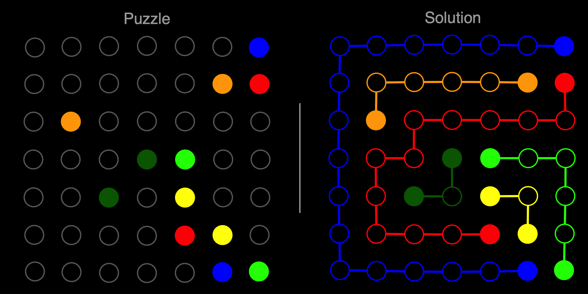

A solver for the Flow Free puzzle game using Clojure and SAT.

Find the code on github.
On a recent holiday, I found out that the friend I was travelling with plays this game a lot. A lot as in every day for the past few years. And to be fair, I can see the appeal (to an extent…). It’s a pleasant game, and there is a feeling of satisfaction that comes with solving one of the game’s puzzles.
But wouldn’t it be more satisfying if we could find a solution to all Flow Free maps?
This blog explores one way to do this using Boolean Satisfiability (SAT).
The core mechanics of the game are pretty simple1. At each level, you are presented with a map with pairs of coloured dots occupying some cells:
Screenshot from youtube.
This usually (although not always) takes the form of a square grid. As you progress through the game, the levels get harder by either increasing the size of the map, and/or increasing the number of coloured dot pairs.
The goal of the game is to connect the dots with pipes that can move to adjacent cells, such that every cell is filled:

Gameplay from youtube.
So far, so intuitive.
However, in order to pass the puzzle off to a computer to solve, we need to represent the puzzle as data.
Perhaps the most obvious way to think about the puzzle is as it is displayed in that app. Namely as an array in which each cell takes a colour. The goal of the puzzle is then to find the correct (more on this later) colour for each cell.
This is a fine approach, and will work for the examples we’ve seen so far. However, it is not generic enough to handle everything that Flow Free has to offer.
The Flow Free app comes with a range of additional maze layouts, some of which would be cumbersome to store in a simple array layout. These can be grouped according to a few key characteristics:


Or, of course, some combination of the three:
So what we need is something that can handle these cases as well as the standard square map.
One way of representing any given Flow Free puzzle is a graph2.
Representing a puzzle map as a graph is relatively straighforward. Each cell is represented by a node in the graph. If a pipe can move from one cell to another, then those two cells will be connected by an edge.
We also mark out which cells are “terminal” cells, where flows must start and end. These are marked by a coloured circle in the app’s display.
For example, for a square map this looks like:
However, this also works for the other variants. For example, puzzles with additional connections, like this warp puzzle simply require an additional edge:
Or in the case of the “bridge” puzzles, we would have to split any bridge cells into 2 nodes. One with the horizontal connections and the other with the vertical connections. For walls or blocked connections, we would remove edges. While with alternate shapes, we would have to employ some combination of adding/removing nodes and edges, depending on the exact map.
As I have alluded to already, one convenient way to solve a puzzle like this is reduction to Boolean Satisfiability, or SAT. According to Wikipedia, SAT
… asks whether the variables of a given Boolean formula can be consistently replaced by the values TRUE or FALSE in such a way that the formula evaluates to TRUE. If this is the case, the formula is called satisfiable.
This is useful because this particular problem is very well studied, and as a result, there are many extremely effective off-the-shelf libraries for solving SAT problems. So instead of having to write our own solution from scratch, we can instead convert this problem into a Boolean formula, and pass it off to a pre-existing solver.
In order to convert a given Flow Free level to SAT, we must come up with a set of variables and constraints for SAT, such that the solved expression (i.e. all the variables are set to “true” or “false”, and all the constraints evaluate to “true”) will give us a valid puzzle solution3.
For example, in a 3-colour map, edge i may be associated with three separate variables:
Of course, only one of these can be true, which brings us neatly to …
As mentioned, this constraint follows on naturally from the variable definition. It may seem obvious but we still need to make it explicit. So for edge i, we get an expression like:
Edges in the graph represent connections between cells in the puzzle. This constraint represents the fact that each empty (“connecting”) cell must have a pipe flowing in and out of it. This constraint ensures that all the map gets filled.
The rationale here is similar to that of connecting cells. However, by nature terminal cells must be connected to only one other cell, rather than two. This constraint ensures that pipes actually connect to their start/end points (and go no further).
Having represented our problem in this way, we can hand it off to a SAT solver and receive our solution (if one exists):
As I mentioned above, the code for this solver is available on github. This is written in Clojure and uses the rolling-stones library (an interface to sat4j) to solve a given puzzle, returning “before” and “after” images similar to those shown at the top of this post. This proved to be a particularly nice way to go because Rolling Stones allows you to use arbitrary clojure data structures as your SAT variables. Likewise the ubergraph library4 made working with and visualising the graphs extremely painless, which was a nice surprise. See the project README for more instructions on running the solver.
Although I used SAT to solve this, there are a few other approaches that I think could prove interesting. One such approach is using a genetic algorithm instead of SAT to find the edge colours. As far as I can see, by converting the constraints to a fitness function, a very similar approach could find success. Although I think this would be significantly less convenient and efficient than SAT.
There is also a website, flowfreesolutions.com, that lists solutions to every level of Flow Free. This got me thinking that it’d be an interesting (if quite different) project to try and create a solver using supervised learning methods. After all, it would be relatively trivial to generate a training set of valid mazes automatically.
Since I did this project as part of an attempt to learn a bit more about SAT, I did not do much research beforehand. However, attempting to create a solver for this kind of puzzle is far from unique, and there are plenty of other (generally more impressive) ones floating around:
Some additional entries from 2016 and earlier can be found in Matt Zucker’s post, which I have pasted below:
In fact, in the process of writing this post, I discovered that the origins of the game go back to 1897 as “Numberlink”↩
After all, everything is a graph, even if we’re not sure of the best way to draw them.↩
A common task used to demonstrate this is solving a sudoku puzzle with SAT. I think this talk does a good job of walking through this at a slower pace than I have done here. I’ve also shamelessly ripped off the tile pun for this blog post.↩
As it happens, both rolling-stones and ubergraph have the same author!↩